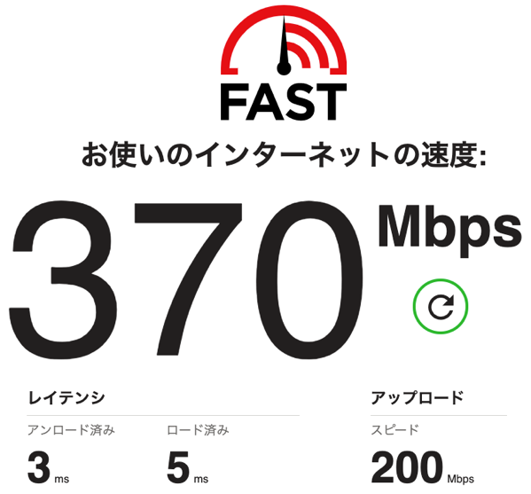

enひかりが開通しました。ぶっちぎりの速さでびっくりしています。

ルータは自動設定でとりあえず繋がった状態なんです。
まずは、ちゃんと設定していこうと IP固定の設定からやることにしました。enひかりのキャンペーンで安く買った（1000円＋送料800円）エレコムのルータ（WRC-1167GST2）を設定していました。
ELECOM 11ac 867+300Mbps 無線LANギガビットルーターWRC-1167GST2
https://www.elecom.co.jp/products/WRC-1167GST2.html
家庭用なのでコンソール接続から、細かな設定をするタイプじゃなくてWEB画面から設定する感じです。ファームウェアを最新に上げて、WANの設定をしたところ全然つながりません。
ELECOM（WRC-1167GST2） のルータは、ファームウェアがVer1.21以上だと、WANアクセスタイプ「transix（固定IP）」が選択できるようになるんですが、
【GST2】transix（固定IP）の設定方法
http://qa.elecom.co.jp/faq_detail.html?id=8225&category=1054&page=1
この入力欄は以下のようになっています。
WANアクセスタイプ：transix（固定IP）
トンネル終端IPv6アドレス：
Interface ID：
グローバルIPv4アドレス：
アップデートサーバー ユーザー
アップデートサーバー パスワード：
enひかりから、通知された固定IP情報のご案内には「BRアドレス」ってあるんですよね。
v4IPアドレス：106.xxx.xxx.xxx/32
インターフェイスID：IPv6アドレスの64bit（半分）
BRアドレス：IPv6アドレスの64bit（半分）
ユーザーID：xxx
パスワード：xxx
トンネル終端IPv6アドレス っていうのが、BRアドレスだと思って入力してみたんですが設定が完了せずダイアログが出るんですよね。
眠くなったので、翌日土曜日に enひかりに電話して聞こうと思いその日は寝ました！
で、翌日サポートに電話したらそのルータは「enひかり｢v6プラス｣固定IPサービス（IPinIP）」には対応していません。とのこと！
はっ！まじっすか！ 1800円でゲットしたと喜んでいましたが、どうやらこの家庭用ルータでは設定できないようです。
じゃどんな機器で設定可能ですか？ と聞いたところ、
enひかり｢v6プラス｣固定IPサービスについて（IPinIP）
https://enhikari.jp/v6plus.html
：：
上記v6プラス対応NTT東日本又はNTT西日本社製のHGW
設定方法
http://ntt.setup:8888/t/ にアクセス
IPv4設定⇒高度な設定⇒固定アドレス設定⇒enひかり開通のご案内に記載のIPv4アドレスを入力ヤマハ社製 RTX/NVRシリーズ 設定例
NEC社製 UNIVERGE IXシリーズ 設定例
古河電工社製 FILTELnet-Fシリーズ 設定例
センチュリー・システムズ社製 NXR,WXRシリーズ 設定例
※｢v6プラス｣対応機器について詳しくは販売元各社公式ホームページをご確認ください。
とのこと。とりあえず、公式にこのルータでは、v6プラスの固定IPは設定できないと回答いただいたので諦めがつきました。
そもそも、IP固定サービスの説明は以下で、
enひかり固定IP
https://enhikari.jp/koteiip.html
::
＊enひかり固定IPのご利用には、enひかりの契約が必要です。固定IPのみのご契約はできません。
＊固定IPv4アドレスとなります。IPv6接続をご希望の場合はenひかり「v6プラス」も併せてお申し込みください。::
一番下の注意書き※にv６プラスの固定IPにすると、ルータは限定されたものが必要です。とか注意書きが欲しかった。
また、そのページにはちゃんと書いてあるんですがね。
enひかり｢v6プラス｣
https://enhikari.jp/v6plus.html
::
enひかり｢v6プラス｣固定IPサービスについて（IPinIP）
※固定IPのご利用には別途enひかり固定IPのお申込及び対応機器のご用意及び設定が必要です。
::
transix の説明ページには、enひかり固定IP との併用はできない と記載があります。うーん、よくわからん。
enひかり｢transix(トランジックス)｣
https://enhikari.jp/transix.html
::
＊enひかり｢transix｣のご利用には、enひかりの契約が必要です。enひかり｢transix｣は固定IPサービス及びenひかり｢v6プラス｣との併用はできません。
つまり、固定IPを選んだら、単独で契約するか、またはv6プラス と併用するかの２択となるようです。
自分の場合は、固定IPとv6プラスをオプションで選んだのでこういうハマり事に遭遇したというわけですね。
もう一度、書いておきますが
固定IPとv6プラスを選んだら、設定できるルータは選ばないとだめ！
ということです。ちょっとわかりにくいですよね。
ということで、この設定ができるルータ選びをすることにします。次回は、ルータ選び編ですね。